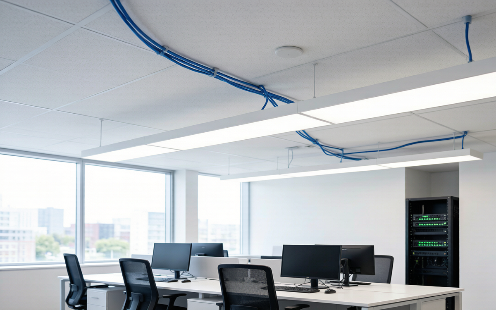
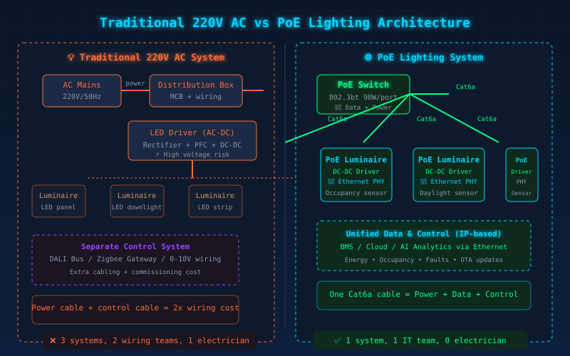
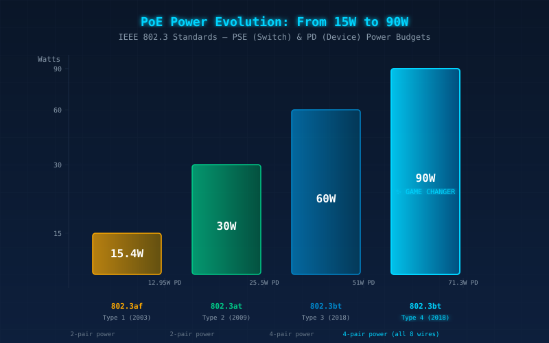
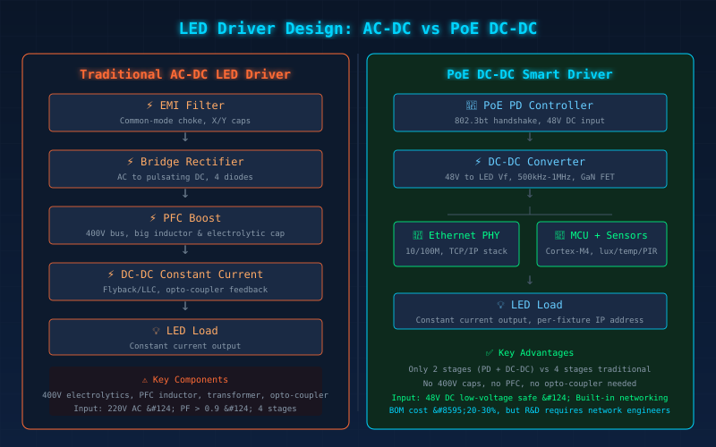

一、一个真实的场景：为什么写字楼开始用网线点灯？
2026年8月，深圳某新建甲级写字楼在做照明方案选型时，遇到了一个"反直觉"的方案——不用强电布线，用网线给所有LED灯具供电。
不是开玩笑。项目方算过一笔账：传统220V强电布线需要持证电工、开线槽、装接线盒、每个回路单独敷管，光是照明布线就占电气预算的40%以上。而如果采用PoE（Power over Ethernet）照明——用标准Cat6a网线同时给LED灯供电+传数据——布线工作可以和IT网络一起做完，一套线缆，两个系统。装修工期缩短15天，综合布线成本降低约30%。
这不是概念验证。根据360iResearch 2026年8月发布的报告，全球PoE照明市场2026年达21亿美元，CAGR 12.59%，预计2032年将突破43亿美元。更关键的是，IEEE 802.3bt标准的落地已经把单端口供电能力推到了90W（设备端实际可用71.3W）——这个功率覆盖了绝大多数商用LED灯具。
对于LED驱动电源厂商来说，PoE不是"又一个新协议"那么简单。它让驱动电源的输入从220V AC变成了48V DC低压，同时强制要求内置网络通信能力。 驱动电源正在从"电力设备"变成"IT设备"。
二、PoE照明的技术逻辑：一根网线搞定三件事
理解PoE照明，先理解PoE本身。
PoE的核心原理是把48V直流电加载在以太网网线上（利用网线中空闲的4、5、7、8号芯线，或者通过数据线对叠加供电），同时不干扰数据传输。对终端设备来说，从网口取的既是电、也是数据。
在照明场景中，这个逻辑被放大：
- 传统方案：220V AC → 配电箱 → 强电布线 → 灯具内AC-DC驱动电源 → LED灯珠。控制走另一套系统（DALI总线/无线网关）
- PoE方案：PoE交换机 → 网线 → 灯具内DC-DC驱动电源 → LED灯珠。控制在同一根线里完成
三件事被合并成一件：
- 供电：48V DC通过网线到达灯具，驱动电源只需做DC-DC恒流转换（不需要整流桥、不需要PFC电路、不需要高压电容）
- 通信：每个灯具通过以太网获得独立IP地址，开关/调光/色温/场景切换全部走IP协议，不再需要独立的调光总线
- 数据采集：灯具内置传感器（占空/光照/温度），数据实时回传至楼宇管理系统。每个灯具都是一个"物联网节点"
这跟传统LED驱动电源的设计逻辑完全不同。传统驱动电源的核心指标是效率、PF值、浪涌防护、THD。PoE驱动的核心指标变成了：DC-DC转换效率、网络延迟、数据吞吐量、PoE握手协议兼容性。

三、802.3bt标准：90W供电能力改变游戏规则
PoE的供电能力经历了三代演进：
| 标准 | 年份 | PSE供电功率 | PD可用功率 | 适用灯具功率 |
|---|---|---|---|---|
| 802.3af (Type 1) | 2003 | 15.4W | 12.95W | ≤10W（筒灯、小射灯） |
| 802.3at (Type 2) | 2009 | 30W | 25.5W | ≤20W（面板灯、线性灯） |
| 802.3bt Type 3 | 2018 | 60W | 51W | ≤40W（高亮面板灯） |
| 802.3bt Type 4 | 2018 | 90W | 71.3W | ≤60W（大尺寸线型灯、工矿灯） |
802.3bt（也叫PoE++或4PPoE）是游戏规则改变者——它利用网线的全部4对双绞线同时供电，把功率推到了90W。这意味着什么？一个标准办公室的2x4英尺LED面板灯通常30-40W，一根网线就能带动。甚至一些中小功率的工业灯具（60W以内）也能接入PoE。

实际工程数据：新加坡Capital Tower在2025年完成PoE照明改造，12层办公楼共约4800个PoE LED灯具，每个灯具平均功耗28W，全年节能37%（相比传统荧光灯），最关键的是空间利用率数据——通过每个灯具的占空传感器数据，物业发现36%的工位在下午2-5点实际无人使用，据此优化了办公空间租赁策略。
"照明数据比照明本身更值钱"——这是PoE照明给行业上的最重要一课。
四、对LED驱动电源厂商的三重冲击
PoE给传统LED驱动电源厂商带来的不是"要不要做"的选择题，而是"怎么做"的必答题。三重冲击，一层比一层深：
第一重：拓扑重构——扔掉整流桥和PFC
传统220V AC输入的LED驱动电源，前端必然有EMI滤波→整流桥→PFC升压→DC-DC恒流这一整套高压电路。PFC电感、高压电解电容、MOSFET——这些是驱动电源成本里的大头。
PoE驱动的输入是48V DC低压。整流桥不需要了，PFC不需要了，400V耐压的电解电容换成了63V的，整个BOM成本理论上可以下降20-30%。但换来的是：DC-DC转换需要更高的开关频率（通常500kHz-1MHz）来压缩电感体积，同时对效率的要求不减反增——因为PoE交换机端到灯具端的线缆压降已经消耗了一部分功率预算。
第二重：通信集成——每颗驱动芯片都得"会说话"
传统驱动电源最多带一个0-10V或PWM调光接口，高级一点的配DALI接口。PoE驱动必须内置以太网PHY芯片和TCP/IP协议栈——本质上是把一个微型网络设备集成到驱动电源里。
目前主流方案：
- 微芯(Microchip) KSZ系列 + MCU：成熟方案，适合中小批量
- TI DP838xx + Cortex-M4：工业级，支持1588精密时钟同步
- Silicon Labs Si347x：集成PoE PD控制器 + DC-DC控制器，单芯片方案
对驱动电源厂来说，这意味着研发团队里必须有嵌入式网络工程师——光会做电源不够了。
第三重：软件定义——驱动电源开始跑固件
PoE驱动不再是一个"接上线就工作"的黑盒子。它需要：
- LLDP协议与交换机协商供电等级
- DHCP获取IP地址
- 运行HTTP/MQTT/CoAP服务接收调光指令
- 上报能耗、温度、运行小时数
- 支持OTA固件升级
驱动电源变成了一个需要持续维护的软件产品。这对习惯了"硬件出厂就完事"的驱动电源厂来说是思维方式的根本转变。

五、PoE照明的真实适用边界——别盲目上
PoE不是万能药。从工程实践来看，它最适合以下场景：
适合PoE照明 ✅
- 新建甲级写字楼、联合办公空间
- 医院病房、诊室（低压安全 + 护理呼叫联动）
- 学校教室、图书馆（分时分区控制 + 能耗数据透明）
- 商业零售（照明数据反哺客流分析）
- 数据中心、机房（本身就是IT环境）
不适合PoE照明 ❌
- 大功率工业照明（150W+工矿灯，超出PoE供电能力）
- 户外路灯（网线不防水，距离超100米限制）
- 存量老建筑翻新（没有结构化布线基础，改造成本过高）
- 对成本极度敏感的项目（PoE交换机 + 网线初期投入高于传统布线）
另外一条工程底线：网线距离不能超过100米（以太网物理层限制）。每增加一层楼，就得加一台PoE交换机。对于高层建筑，需要在弱电井里做交换机级联规划——这又回到了IT网络设计的老本行。
六、结论：驱动电源的"IT化"是不可逆的
PoE照明不是来替代所有传统照明的，它是来重新定义"高级照明"的边界的。
对于LED驱动电源厂商，这条趋势线已经非常清晰：
- 2026-2028年：PoE主要渗透新建高端办公楼和医疗教育场景，驱动电源厂商从"AC-DC专家"开始组建"DC-DC + 网络"团队
- 2028-2030年：802.3bt芯片成本降到$2以下，中型商业项目开始普及PoE，驱动电源"标配"网络接口成为行业常态
- 2030年后：PoE + 无线（Wi-Fi 7/Wi-Fi HaLow）混合架构成熟，照明成为智慧建筑的"神经系统"，驱动电源厂商要么成为IT基础设施供应商，要么被IT基础设施供应商整合
我常跟团队说一句话：未来的LED驱动电源，不会让你选"要不要联网"——因为不联网的驱动，连竞标资格都没有。 PoE只是"驱动电源IT化"的第一站，5G专网照明、Wi-Fi HaLow照明、卫星物联网照明……后面的路还长。
先修好网线这一课。
📊 数据来源：360iResearch "Power Over Ethernet Lighting Market" (2026年8月)；IEEE 802.3bt-2018标准；新加坡Capital Tower公开案例。
🔗 NEXLAMP耐利普智能照明：专注Tuya Zigbee/Matter智能照明系统，覆盖7W-400W全功率段LED驱动电源及控制方案。www.nexlamp.com